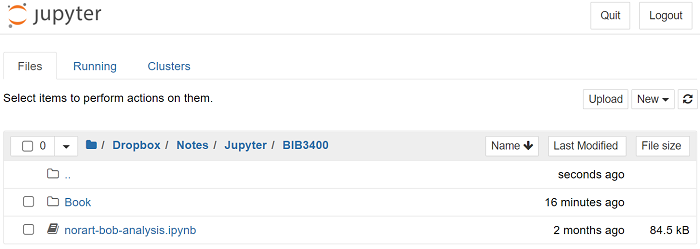
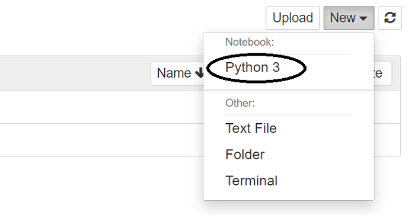
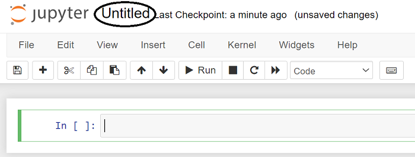
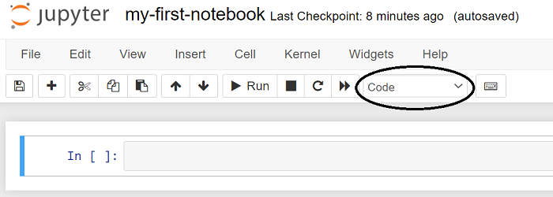
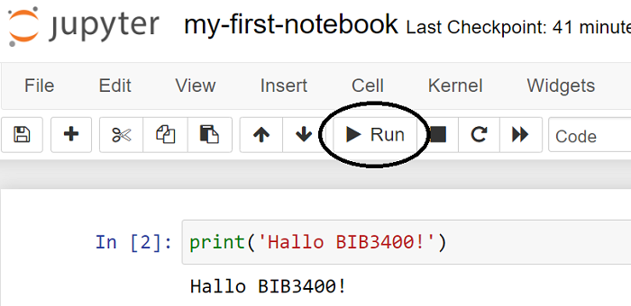
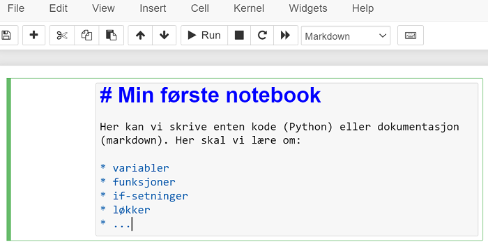
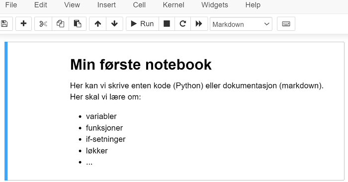

2. Jupyter Notebooks#
For å enklest mulig ta i bruk Python som programmeringsspråk, er det nødvendig å sette opp et brukergrensesnitt som heter Jupyter Notebook. I dette kapitlet går vi gjennom hvordan få satt opp dette brukergrensesnittet gjennom å installere noe som heter Anaconda. Kapitlet gir også en introduksjon til Jupyter Notebooks, og viser hvordan skrive og kjøre en veldig enkel programsnutt ved bruk av Python.
Hva er Jupyter Notebooks og Anaconda?#
Jupyter Notebooks er en webapplikasjon som gir oss mulighet til å skrive, teste og utføre enkeltceller med Python-kode. I dette grensesnittet forholder du deg til et dokument hvor du både kan skrive og kjøre kode, samt skrive, notere og kommentere. Styrken til webapplikasjonen er at den gir en mulighet for at data, kode og tekst kan komme sammen, og berike hverandre. Dette ser særlig nyttig der man forholder seg fortolkende til data og analyser, og/eller skal dokumentere hva og hvorfor man gjør som man gjør.
Anacona er et teknisk rammeverk som gjør det mulig å bruke Python. Noe av det viktigste Anaconda tilbyr er muligheten til å programmere i Jupyter Notebooks, og det å kunne lage digitale notatbøker som inneholder programmering og resultat av programmering.
I tillegg kommer Anaconda med over 250 tilleggspakker til Python, som gjør at du kan bruke byggestener i programmeringen som andre tidligere har skrevet som programsnutter for å utføre spesifikke handlinger. Anaconda inkluderer Pandas, som er en pakke (på engelsk heter det library) du kommer til å lære å ta i bruk i databehandling senere. Tenk på Pandas og andre slike pakker som utvidelser.
Installere Anaconda#
Dett gjør du enkelt ved å gå til installasjonssiden for Anaconda og velge programvare basert på hvilket operativsystem du kjører. Etter å ha fullført installasjonen vil du finne igjen Anaconda Navigator i programvareoversikten din.
⚠️ Merk! Har du en maskin tilknyttet en arbeidsplass (f.eks. et universitet) vil du finne Anaconda der du finner annen programvare du kan installere (f.eks. Software Center). Det vil også avhengige av hvilke admin-rettighter du har til maskinen du disponerer på arbeidsplassen, om du kan installere Anaconda som programvare selv eller må ta kontakt med IT-support.
Starte Jupyter Notebooks#
Enten start programmet Anaconda og velg “Jupyter Notebooks” på startskjermen. Du kan også velge “Jupyter Notebooks” direkte i programoversikten din hvis du foretrekker det.
Når du starter Jupyter Notebooks skjer to ting. Først åpnes et svart vindu, dette viser at programmet startes. Etterpå åpnes programmet i en nettleser. Det ser ut som vi er på nettet, men alt skjer på din lokale maskin.
Når du er ferdig lukk fanen eller avslutt nettleseren. Hvis du får melding om at en notebook ikke er lagret, trykk på CTRL+S for å lagre.
Til slutt kan du stenge det svarte vinduet, her kan du bruke kommandoen CTRL+C.
Filer og mapper#
Når programmet startes vises et vindu i nettleseren med en oversikt over mapper og filer. Mapperstrukturen kjenner du sikkert igjen som din maskins mappestruktur. Den er hierarkisk, dvs. en mappe kan inneholder andre mapper. Det kan du se i skjermbilde under hvor den grå menyraden viser i hvilken mappe i din lokale maskin du befinner deg i. Dette er “start”-stedet for Jupyter Notebooks. Det vil si at det også er her nye filer du oppretter vil bli lagret, med mindre du aktivt selv velger en annen mappe.

Din første notebook#
✍️ Oppgave: Følg instruksen under for å opprette din første notebook.
For å bruke Jupyter Notebooks til å programmere i, må vi opprette en ny fil som er en notebook. Denne filen vil kjennetegnes av at den slutter på .ipynb. El slik fil kan bare åpnes i Jupyter Notebooks eller JupyterLab. Merk at for å åpne en slik fil må du alltid starte Jupyter Notebooks først.
For å opprette en ny notebook klikk på New-knappen og velg Python 3 fra menyen 
.
Notebook’en bør gis et beskrivende navn. Det er dette navnet som brukes når du skal finne den igjen. Klikk på Untitled for å endre navnet på notebook’en. 
.
Skriv inn et nytt navn og klikk på Rename-knappen nederst til høyre.

.
En notebook består av celler. Celler kan brukes til kode eller dokumentasjon. Dokumentasjon skrives i et markeringsspråk som heter markdown. Som default er celler kode-celler. Hvilken type celle vises i knapperaden. Her kan man endre cellen fra å “leses” som kode, til å være beskrivende tekst ved å velge markdown. Vi ser bort fra Raw NBCovert og Heading her. 
.
For å skrive i en celle må cellen være i redigeringsmodus. Klikk i cellen for å aktivisere den. At cellen er aktiv vises ved at fargen på venstre-rammen skiftes fra blå (kommandomodus (eng.: Command Mode)) til grønn (redigeringsmodus (eng.: Edit Mode)). Når den er grønn kan du skrive kode i cellen. På bilde under er det skrevet inn en enkel kode.

.
Koden i cellen kjøres ved å klikke på Run-knappen i knapperaden eller hurtigtastkombinasjonen SHIFT+ENTER. 
.
Hvis koden produserer et resultat (output) vises dette under cellen. Slik kan det også se ut:
1print("min første kode")
min første kode
✍️ Oppgave: Kopier og lim inn det som står i den første cellen til en celle i din egen notebook. Forsøk å endre på teksten som står mellom anførselstegnene. Trykk på Run.
Markdown#
Når du velger at cellen skal være i Markdown betyr det at den ikke er kode. Da kan du skrive ren tekst istedet. Har du behovet for å formattere teksten ved å endre skriftstørrelse, eller endre den til fet eller kursiv skrift må du bruke noe som heter Markdown-språk.

Over ser du eksempel på en markdown-celle i redigeringsmodus. Cellen inneholder en hovedoverskrift, etterfulgt av et avsnitt med tekst. Merk at ingen markering er nødvendig for et avsnitt. For å skille avsnitt legges inn en blank linje. Til slutt vises en usortert liste. Når du kjører cellen (Run), vil den bli slik:

Markdown-formattering#
Type formattering |
Markdown |
|---|---|
Overskrift 1 (stor) |
# Overskrift 1 |
Overskrift 2 (medium) |
## Overskrift 2 |
Overskrift 3 (liten) |
### Overskrift 2 |
Avsnitt |
En blank linje skiller mellom avsnitt |
Kursiv tekst |
*kursiv tekst* |
Fet tekst |
**fet tekst** |
Unummerert liste |
* listepunkt |
Nummerert liste |
1. listepunkt |
Oversikt over flere ulike Markdown-formatteringer finner du her
✍️ Oppgave: Lag en ny celle i din notebook og velg at den skal være i Markdown. Prøv deg frem med ulike typer formattering som vist over og kjør cellen for å se resultatet.
Hurtigtaster#
For å arbeide raskere er det vanlig å bruke hurtigtaster. Her er noen hurtigtaster som fungerer i Jupyter Notebooks. Legg merke til at hurtigtaster som kun består av et enkelt tegn, for eksempel m må kjøres i en celle som er i kommandomodus (cellen er blå).
Hva |
Hurtigtast |
|---|---|
Bytt til redigeringsmodus (grønn celle) |
ENTER |
Bytt til kommandomodus (blå celle) |
ESC |
Kjøre cellen (Run) |
SHIFT + ENTER |
Endre cellen til en Markdown-celle |
m |
Endre cellen til en Code-celle |
y |
Legg til en ny tom celle over den aktive cellen |
a |
Legg til en ny tom celle under den aktive cellen |
b |
Lagre notebook |
CTRL+S |
Vis en liste over hurtigtaster |
h |
✍️ Oppgave: Prøv ut alle hurtigtastene i din notebook.
Veien videre#
Du er nå klar til å lære Python som programmeringsspråk. Gratulerer!